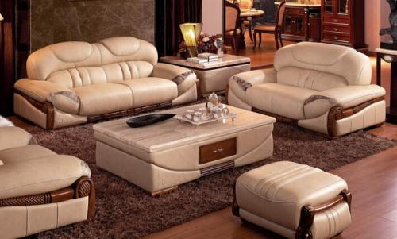

发布时间：2017-10-11 01:53:02
二手沙发回收的价格会受到许多因素的影响，按现在的市场情况来看，家具回收公司主要从事各方面考量二手家具的回收价格。人们也可以从这四个方面对自己来家具做出一个估算。
二手沙发回收的价格会受到许多因素的影响，回收公司也制定了详细的回收标准，如果连没要将就的沙发进行回收，最好先了解一下回收公司在回收方面的价格，这样人们就能做一个大概的估算，看看他们给出的价格是否合理，首先沙发回收的价格会受到家具新旧程度的影响。

除了古玩字画，在回收行业当中，自然是越新越值钱，二手沙发回收也不例外，他的回收价格会和家具的新旧程度形成正比例关系，回收公司会有一个明确的新旧程度划分，人们可以根据自己沙发的实际情况判断出家具的新旧程度，其次二手沙发回收的价格还会受到沙发款式的影响，如果是当下比较流行的款式，他的回收价格就相对较高，如果是款式比较老土的沙发就不能得到一个较高的回收价格，二手沙发回收价格还受到家具完好程度的影响，因为沙发在使用过程中多多少少会受到一些磕磕碰碰，这样就会让家具的完整度降低，在沙发回收的时候影响到他的回收价格。
二手沙发回收价格还会收到运费的影响，如果你的家和回收公司距离比较远，他们在搬运过程中的难度和油耗也就比较多，这也会降低沙发回收的价格，因为回收公司是会从沙发回售的价格当中扣去运费的，只有将这些方面绝不考虑到，才能对家具的回收价格做出一个比较准确的估算，人们在处理旧沙发的时候也能选择出一个最正确的方式。
 电话咨询
电话咨询